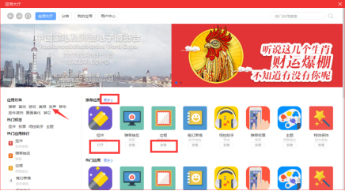
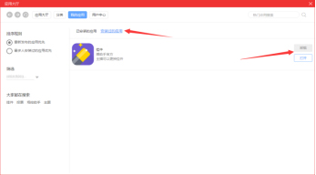
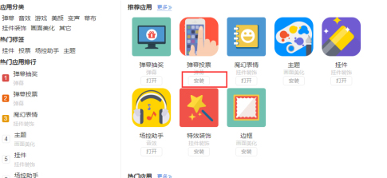
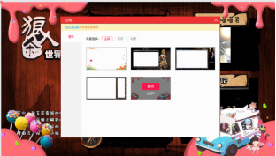

1 点击右侧栏的“播助手应用市场”进入应用大厅，如下图；应用大厅首页主播可以看到所有的应用，点击应用名和图标可以进入应用详情页面，点击安装就可下载应用，安装完成后点击打开按钮可以直接使用应用；主播可根据标签，分类筛选应用，或者根据关键字在右上角的搜索框中直接搜索应用。

2 我的应用页面可以看到主播已经安装的所有应用和安装过的所有应用，在这里主播可以卸载自己不喜欢或者不需要的应用，点击卸载按钮就可以将应用卸载，需要时可再次安装。

应用市场中有挂件，主题，魔法表情等应用，主播可根据直播过程场景的需要自行安装和使用，来帮助主播提高场面效果。
1 安装：在应用大厅选择主播需要安装的应用点击“安装”，提示安装成功；

2 打开：安装完成后，点击打开按钮就可使用，不满意可以点击撤销或者在菜单栏的应用列表中删除。这里以应用边框为例，如下图所示
